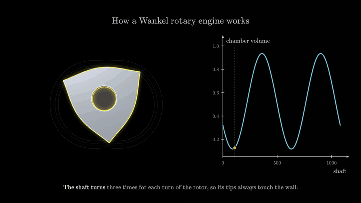
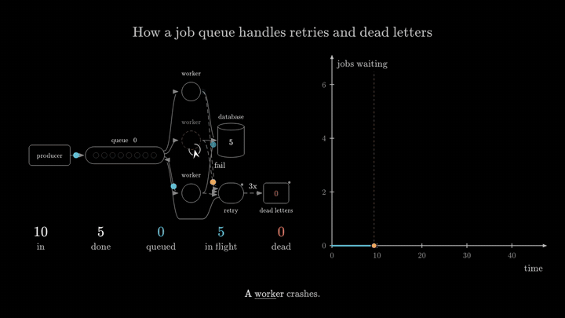
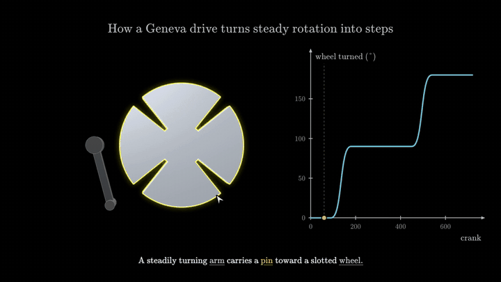
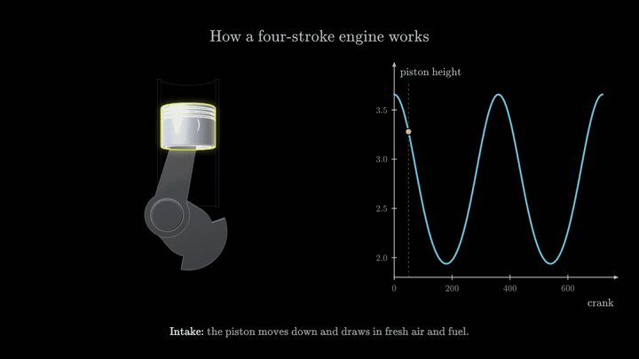
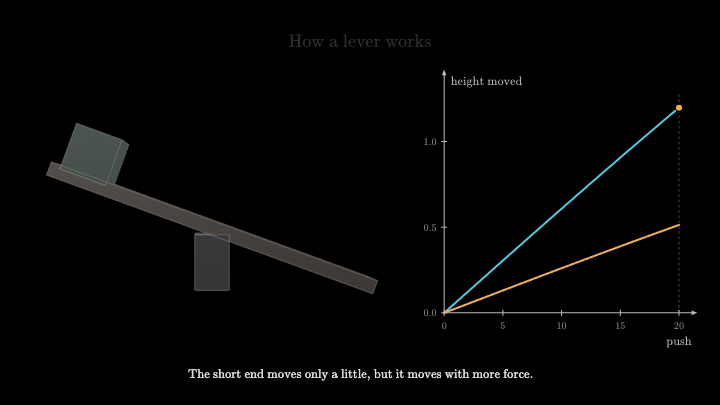
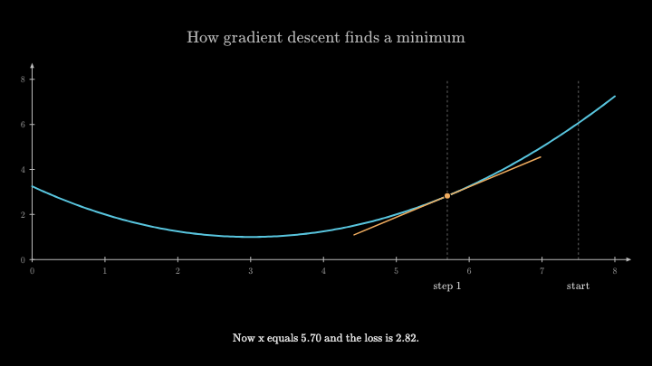
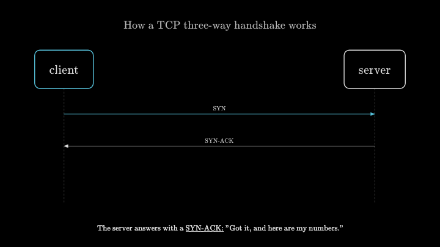
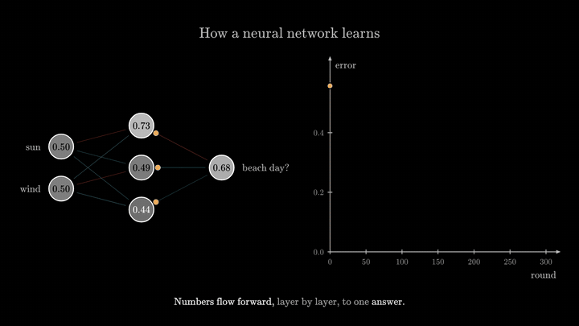
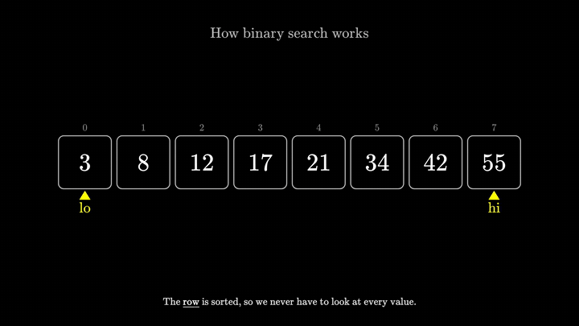

$ mimir new "how does a Wankel rotary engine work"
Ask how something works. Watch the answer.
One call of a language model writes a short script. Mimir lays it out, animates it, narrates it and checks it. About thirteen seconds and about a cent, and you can scrub it, drag its sliders, or export a video.
Play the Wankel engine Source on GitHub npm: mimir-explain

Written by a model in one call: 38 lines, 14 seconds. Click to open the interactive version.
Every one of these was a single sentence
Each opens as one self-contained page that works offline. Press play, scrub the timeline, switch to read mode, or open the controls and move things yourself.

how does a job queue with retries and a dead letter queue workone call · 12 s · 16 lines

how does a Geneva drive turn steady rotation into stepsone call · 60 s · 63 lines

how does a four-stroke engine workone call · 13 s · 55 lines

how does a lever workone call · 20 s · 40 lines

how does gradient descent find a minimumone call · 15 s · 34 lines

how does a TCP three-way handshake workone call · 8 s · 22 lines

how a neural network learnswritten by hand · 27 lines

how binary search workswritten by hand · 21 lines
This is the whole script
No positions, no sizes, no timings. The queue below really runs, so the counts on screen add up.
import { explain, flow, chart } from 'mimir' export default explain({ title: 'How a job queue handles retries and dead letters', stage: { system: flow('producer -> queue[8] -> worker*3 -> database; worker -fail-> retry -> queue; retry -3x-> dead letters', { jobs: { count: 24, every: 1, service: [1.5, 2.2], seed: 5 }, }), depth: chart({ x: 'time', y: 'jobs waiting', follow: 'system.queue' }), }, story: [ { say: 'The [producer](system.producer) adds jobs to a [queue](system.queue). [Workers](system.worker) take them one by one.', system: { until: 8 } }, { say: 'A [worker](system.worker2) crashes. Its job goes to [retry](system.retry) and back into the queue.', system: { crash: 'worker2', until: 16 } }, { say: 'A [poison job](system.deadLetters) fails everywhere. After three failures it is parked as a dead letter.', system: { poison: 1, until: 28 } }, { say: 'Nothing is lost: every job is [done](system.done), waiting or [dead](system.dead).', system: { until: 'end', show: 'conservation' } }, ], })
What one explanation costs
It started as an AI agent in a write, render, look, fix loop. That worked and was useless. Moving the layout into the engine made it one call.
| model calls | tokens | seconds | cost | |
|---|---|---|---|---|
| an agent in a render-and-fix loop | 20 | 732,000 | 104 | $0.28 |
| Mimir, a mid-size model | 1 | 8,300 | 13 | $0.014 |
| Mimir, the cheapest model | 1 | 8,800 | 13 | $0.001 |
Means over six requests, one run each. What "ready" means and where it falls short is in the notes.
How it differs from Manim
Manim is the tool behind 3Blue1Brown, and it is the better tool when a person wants full control of every frame.
Manim
You place and time everything in Python. Output is a video file. Changing one thing means editing code and rendering again. A model can write it, but it has to render, look and fix, many times.
Mimir
You say what is on stage and tell the story; the engine places and times it. Output is interactive: scrub, drag sliders, read it as an article, or export a video. A model gets it right in one call, because there is no layout to get wrong.
Try it
curl -fsSL https://bun.sh/install | bash
bun add -g mimir-explain
mimir new "how does a lever work" --open
Needs bun, a Chrome-family browser, and a model you can call from a command line (a local one works). The engine holds no API key and calls no model itself.